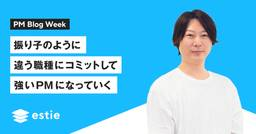
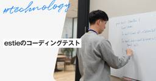

estie inside blog
https://www.estie.jp/blog/
estie inside blog
フィード

振り子のように違う職種にコミットして強い PM になっていく
estie inside blog
こんにちは。estie PM の勝田です。このブログは、3月の estie PM Meetup に向けたブログシリーズとなっており、「PM Blog Week」第3弾3日目のブログです。 今日は、PM として個人が爆発的に成長するためには、PM 以外の役割に "コミット“ することが重要なのではないか、という話を estie での実体験を踏まえてお話ししたいと思います。 自分で自分が爆発的に成長したなんて表現することはおこがましいですが、社内でも「めちゃくちゃ変わったよね」と言ってもらう機会があったので客観的に良くなったと解釈して話を進めさせてください…笑 PM としてある程度やりきったと思っ…
1日前

estieのコーディングテスト
estie inside blog
こんにちはSWEの hishiki です。このブログはestieのソフトウェアエンジニア採用プロセスにおけるコーディングテストについて、その目的や試験の特徴、面接担当者が何を見ているのか、当日、リラックスして実力を発揮していただくコツについて解説するブログとなっております。 「コーディングテスト」と一言で言っても、オンラインで行う画一的な試験など様々ですが、estieではホワイトボードを用いたコーディングテストを行っています。 本記事ではその意図や考え方をご説明し、これからestieでコーディングテストを受ける方に、少しでも安心して挑んでいただけるような内容になればと思います。 なぜコーディン…
1日前
シニアPMへの成長を実感した瞬間
estie inside blog
この記事は、estieのプロダクトマネージャーによるブログシリーズ「PM Blog Week」第3弾・2日目の記事です。前回の記事は<< ユーザー行動ログと向き合う技術 - estie inside blog>>です。 こんにちは。estieでプロダクトマネージャー（PM）を務めている三橋です。 本日は、先日開催したイベント、 [増枠] estie PM Meetup#4 PMキャリアの分岐点。ミドルPMが次に進むべき道とは？ - connpass の振り返りも兼ねて、自身がシニアPMに至った分岐点について、「シニアPMへの成長を実感した瞬間」というタイトルで私の具体的な経験を述べたいと思いま…
3日前
ユーザー行動ログと向き合う技術
estie inside blog
この記事は、estieのプロダクトマネージャーによるブログシリーズ「PM Blog Week」第3弾 1日目の記事です。 （過去の PM Blog Week の記事は こちら ） こんにちは。プロダクトマネージャーのyuiです。 突然ですが、みなさんはプロダクト上のユーザー行動とどのように向き合っていますか？この記事では、最近私がユーザー行動ログに向き合い小さなカイゼンに取り組んだ話をします。 ユーザーの行動ログを気にするようになったきっかけ 昨年の11月に担当しているプロダクトをローンチしました。 （プレスリリースはこちら： J-REIT物件情報の横断検索ができる「estie J-REIT」…
3日前
30代QAエンジニアが新たな挑戦にestieを選んだ理由
estie inside blog
【プロフィール】村上 槙（むらかみ しん） 福岡県出身、九州工業大学卒業。 大学卒業後、製造業の品質管理、自動車の組込みシステム開発を経験後、QAエンジニアにキャリアチェンジ。SHIFT→Shippioを経て2025年1月にestieに参画。 今までのキャリア 新卒では、あまり深く考えず色々な経験をしたいなぁという思いだけで技術派遣系の会社に入りました。そこでたまたま品質管理の仕事をすることとなり、振り返るとそこから今に至るまで「品質」に関わる仕事を続けています。 自動車の組込みシステム開発では、自動車という業界柄、何よりも品質を最優先する開発をしていました。MISRA-Cという業界標準コーデ…
6日前

革新的なデータ基盤を求めていたらestieに辿り着いた
estie inside blog
【プロフィール】宮崎 真輝（みやざき まさき） 2021年に新卒でユーソナー株式会社に入社し、データ基盤開発やサーバサイド開発に従事。 2025年2月よりestieに入社しデータパイプラインの改善などに注力。 今までのキャリア 中学生の頃から独学で情報科学について学んでいた私は、高校生の頃にはソフトウェア開発に携わると心に決めていました。新卒時の就職活動では、やはりソフトウェア開発ができる職種を希望していたのですが、数ある会社の中でもユーソナーの企業データベースというコアプロダクトに強い関心を惹かれ、ユーソナーの中でもデータベース構築に関わることができるポジションを希望し、実際にそのポジション…
8日前
RESTからGraphQL への迅速かつ安全な移行
estie inside blog
こんにちは、estieでソフトウェアエンジニアをしている木村です。 今回は私がテックリードを務めている「estie 物流リサーチ」というプロダクトにおいて、RESTからGraphQLに「迅速」かつ「安全」に移行した話をします。 移行のタイムラインとしては以下の通りで、既存の開発も進めつつ二人のメンバーで約2.5ヶ月という期間で完全に移行することができました。 2024/08/14 移行の計画と開始 2024/10/31 GraphQLへの完全切り替えの完了 2024/11/21 移行後の片付けの完了 今回はいかにして少人数で安全に素早く移行できたかについてその工夫を紹介していきます。 なぜ移行…
15日前
チーム開発を渇望したエンジニアがestieに入社して感じたこと
estie inside blog
【プロフィール】小林寛幸（こばやしひろゆき） 修士を卒業後、新卒で社内ベンチャーに就職しARアプリケーションの開発に従事する。 2024年4月より株式企業estieに入社し、データエンジニアリング業務を担当。 ボルダリングで消費したエネルギーを酒とラーメンで帳消しにするのが趣味。 今までのキャリア 一貫したキャリアというわけではなく、その時々で面白いと思ったことに従事するというスタイルで人生を歩んでいます。 大学の学部時代では制御工学を専攻しており、当時は制御の理論にも機械学習の要素を組み込んでいくといった潮流があったため、研究室内で機械学習の理論について勉強していくうちに機械学習自体に興味が…
23日前
進化し続けるチームを作るために、2人の部長が大事にしたいこと。
estie inside blog
荒 大樹（あら だいき） 千葉県出身。平和不動産にて商業用不動産の売買・AM業務を経験後、日本橋兜町・茅場町エリアの街づくりやPM業務、事業開発に従事。 2024年2月よりestieに参画。事業開発、セールスを経て2025年1月よりマーケットリサーチ事業本部 クライアントソリューション1部 部長に。 宮内 亮輔（みやうちりょうすけ） 伊藤忠商事にて、北米IT商材の日本市場展開、SIer（日本及び東南アジア）での営業/事業開発、ベンチャーキャピタルにおける国内外ITスタートアップへの投資/経営支援及びファンド運営等11年間にわたり情報産業分野における幅広い事業に従事。 2021年5月よりesti…
1ヶ月前
【雰囲気レポ】estie PM Meetup #4 を開催しました
estie inside blog
こんにちは。プロダクトマネージャーの三橋です。 1月31日、第4回目のestie PM Meetupを開催しました。 [増枠] estie PM Meetup#4 PMキャリアの分岐点。ミドルPMが次に進むべき道とは？ - connpass 本イベントは、プロダクトマネジメントに関する知見や経験を共有し、PM同士が交流できる場として、estieが不定期に開催しています。今回、第4回は「PMキャリアの分岐点。ミドルPMが次に進むべき道とは？」 をテーマに掲げて、登壇者発表およびパネルディスカッションを行いました。 登壇者は、株式会社LIFULL 三枝 由里さん、株式会社サイバーエージェント 早川…
1ヶ月前
「大手×安定」から「ベンチャー×挑戦」へ 私らしいキャリアの形とは
estie inside blog
【プロフィール】 永坂文乃（ながさかあやの） 2017年に新卒で株式会社フォーバルに入社し、中小企業向けのコンサルティング事業に従事。 2021年よりDX事業部へ異動し、地産地消による永続的な地方創生をDXを活用して実現する新事業の立ち上げ、組織マネジメントを担う。 2024年11月よりestieに参画。カスタマーサクセスの立ち上げを担当。 趣味は海外旅行、サウナ、カフェ巡り。焼肉が大好きで、多いときは週3で通う 今までのキャリア 短大まで生まれ故郷である鹿児島で育った私は、都会への憧れが強く、社会人になったら県外に出て、広い視野を持ち、広い世界で働きたいという漠然とした思いだけで就職活動をし…
1ヶ月前
MySQL Shellを用いたローカル環境DBへの高速なデータ投入
estie inside blog
estieの上久保です。昨年4月に入社してから不動産売買領域のプロダクト開発を主に担当しています。 背景 不動産ドメインの都合上、建物や登記簿といった多種多様で複雑なデータを扱う必要があることからプロダクトのテーブル構造は頻繁にアップデートが発生します。エンジニアはテーブル定義を最新の状態に更新した後に、手元の環境で立ち上げた開発用データベースへのmigrationの適用とseedデータ投入を行うことで、チーム全員が同じ状態のデータベースを見て開発を進めることができます。 私たちのチームのプロダクトでは当初mysqldumpを用いてstaging環境のデータを手元の開発環境に投入していたのです…
1ヶ月前
session-manager-plugin を Golangからビルドした際に起きた謎の挙動の調査記録
estie inside blog
Golangでビルドした社内ツールの接続問題調査記録 こんにちは。estieでソフトウェアエンジニアをしている木村です。 最近、社内で利用するツールの開発中に興味深い調査を行いました。このツールは、ローカル環境から社内の開発環境に接続しやすくするためのもので、内部でAWSのSession Manager Pluginを活用しています。開発の過程で、このPluginをGolangでビルドして組み込む（RustからGoを呼び出す話も面白いので興味があればぜひ Rust から Go で書かれた関数を呼ぶ - estie inside blog も！）ことを試みたところ、接続が30秒で切断されるという…
1ヶ月前
営業現場に飛び込んだHRが、今estieをお勧めする3つの理由
estie inside blog
【プロフィール】高原 将平 大学卒業後、パーソルクロステクノロジーに新卒入社し法人営業に従事。その後、ビズリーチに転職し営業やカスタマーサクセスとしてヘッドハンターや採用企業様のご支援に従事する中で、自らも個人のキャリアづくりの力になりたいと考えるようになる。 人事・組織コンサルティング企業での事業開発・人事を経て2024年5月よりestieに参画。オペレーション（ビジネス）部門HRとして採用～オンボーディング、キャリア開発支援などを担当。2024年12月までアカウントマネージャーとして契約企業様の支援を兼務し、2025年1月よりHR部門専任。 2024年月末までアカウントマネージャーを担当し…
2ヶ月前
デザインとエンジニアリング、両方のスキルを活かせるestieでのキャリア
estie inside blog
【プロフィール】伊藤 峻 大学卒業後、Web制作会社でデザインおよびフロントエンド業務を経験。 2024年4月にestieへ入社。デザインエンジニアとしてデザイン作成やUI実装などに従事 今までのキャリア 前職ではWeb制作会社で主にWebサイト制作の業務に携わっていました。仕事内容は、WebサイトやLPのデザインからマークアップやコーディング、諸々のアニメーション実装から CMS 実装など、サイト制作全般に関わる業務を幅広く行っていました。制作会社の規模や扱う案件もそこまで大きいものではなかったので、デザインをやったりコーディングしたりと手広くやっていました。 転職のきっかけ 前職ではLP制…
2ヶ月前
2025年の抱負〜AIをスタンダードとしたユーザージョブ解決への挑戦〜
estie inside blog
この記事は、estieのプロダクトマネージャーによるブログシリーズ「PM Blog Week」第2弾7日目の記事です。前日の記事は 『ロードマップを作るのが億劫なあなたへ』。 こんにちは、estie（エスティ）VP of Productsのtakuya__kuboです。1月のestie PM Meetupに向けた第2回estie PM Blog Weekもラスト。アンカーブログとして書かせていただいております。本日は2025年の抱負として、「AIをスタンダードとしたユーザージョブ解決への挑戦」について書きたいと思います。 本ブログの背景 2022年にChatGPTが登場し、LLMが注目を集め始…
2ヶ月前
ロードマップを作るのが億劫なあなたへ
estie inside blog
どうもこんにちは、PM/事業開発 の中村（ゆーぶん）です。 この記事は、estie PM Blog Week 6日目の記事です。estie の PM が持ち回りでブログを書いています。前日はPM勝田の 「立ち上げフェーズのプロダクトにおいてライトパーソン特定が営業だけでなく開発にも寄与するレバレッジポイントな説」 でした。<< 前回の記事はこちら>> 今日はロードマップを作ったり更新するのが億劫になってしまい、義務感で作業している方に向けて、私なりの考えを伝えられたらと思います。 みなさん、ロードマップ作ってますか？ プロダクトを保有している会社のプロダクトマネージャー、ないし経営者の皆様、ロ…
2ヶ月前
立ち上げフェーズのプロダクトにおいてライトパーソン特定が営業だけでなく開発にも寄与するレバレッジポイントな説
estie inside blog
どうもこんにちは、PM の勝田です。 この記事は、estie PM Blog Week 6日目の記事です。estie の PM が持ち回りでブログを書いています。<< 前回の記事はこちら>> 今日は私が担当している estie レジリサーチで爆発的な売上成長を実現した裏側についてお話ししたいと思います！ はじめに 私は estie レジリサーチという住宅領域向けの DaaS ( Data as a Service ) の PM を担当しています。 このプロダクトのすごさや面白さは いよいよ、住宅領域をやってくぞ - estie inside blogにて存分に語っていますので、このブログを読み…
2ヶ月前
新米PMのはじめの一歩は"ジブンゴト化"すること
estie inside blog
この記事は、estieのプロダクトマネージャーによるブログシリーズ「PM Blog Week」第2弾5日目の記事です。<<前回の記事はこちら>> こんにちは、プロダクトマネージャーのyuiです。 少し前ですが11月にLayerXさんのイベント「ジュニア・ミドルPMが語る、悩みながらもやるしかNight #PMやるしかNight」で、ジュニアPM枠として最近の悩みやその乗り越え方についてお話しさせていただきました。 そのときの発表内容や時間の関係で割愛したことも含めて改めて記事にしたいと思います。 登壇資料： 知識を超えて実践するためのマインドの作り方 - Speaker Deck イベント動画…
2ヶ月前
入社半年のPMが思うestieのユニークさ
estie inside blog
この記事は、estieのプロダクトマネージャーによるブログシリーズ「PM Blog Week」第2弾4日目の記事です。<<前回の記事はこちら>> estieに入社して半年が経ちました。少しずつ会社に慣れてきたこのタイミングで、estieのユニークな点について自分なりに感じたこと、考えたことを「事業」「組織」という軸で言語化しておこうと思います。 事業 前提 estieは不動産情報を閲覧・検索・分析が可能なSaaSプロダクトを展開する会社です。不動産情報といってもさまざまな種類がありますが、estieでは不動産の種類（オフィスビル、住宅、etc）、不動産の取引形態（賃貸、売買）に沿って複数のプロ…
2ヶ月前
プロダクトマネジメントの本質は戦略マネジメントである
estie inside blog
こんにちは、プロダクトマネージャーの齋藤 @shisaito です。 この記事は、estieのプロダクトマネージャーによるブログシリーズ「PM Blog Week」第2弾3日目の記事です。<< 前回の記事はこちら>> 今回は、プロダクトマネジメントの本質について考察します。 プロダクトマネジメントの重要性 ここ数年で、プロダクトマネジメントの重要性は高まり、プロダクトマネージャーの役割も正しく認識されるようになってきました。背景として、ユーザニーズの多様化やテクノロジーの進化、そして多様なサービスが登場したことにより、細分化や専門化して発展してきたなどがあげられます。このような環境では、単にプ…
2ヶ月前
製品機会発見〜芋づるを探せ〜
estie inside blog
この記事は、estieのプロダクトマネージャーによるブログシリーズ「PM Blog Week」第2弾2日目の記事です。<<前回の記事はこちら>> こんにちは。estie PMの冨田です。1月のestie PM Meetupに向けたBlogシリーズを今年もやっていきます！ （昨年書いた記事 自分の仕事のインパクトを肌で感じ取れるエンタープライズSaaSとは？ - estie inside blogも是非ごらんください） さて、今回はBtoB市場におけるプロダクトディスカバリーをテーマに書きます。 プロダクトディスカバリーとは プロダクトディスカバリーとは製品（を世に打ち出す）機会を発見・検証する…
2ヶ月前
estieに入社して気付いた4つのPMタイプ
estie inside blog
こんにちは。 estieでプロダクトマネージャー（PM）を務めている三橋と申します。 第2回 estie PM blog weekの1日目を担当します。 昨年末でestieに入社して1年が経過しましたが、毎日が楽しく、飽きることがありません。 そして、そんなestieには個性豊かなPMがたくさんいます。 本日は、estieのPM陣を私の独断と偏見で4つのタイプに分類し、それぞれの仕事の進め方についてお話ししようと思います。 どのタイプが優れている、または劣っているということではなく、「こんな進め方もあるのか」と思っていただければ幸いです。 【プロフィール】三橋 佳明 ITベンチャー複数社を経て…
2ヶ月前
国交省コンペ優勝！賃料予測コンペ1位解法
estie inside blog
こんにちは、スタッフエンジニアの @kenkoooo です！ 先日開催されたデータサイエンスコンペ「第1回 国土交通省 地理空間情報データチャレンジ ～国土数値情報編～ モデリング部門」で優勝しました！(最終順位表) この記事では1位解法を解説しています。不動産データ分析の雰囲気が伝われば幸いです。 第1回 国土交通省 地理空間情報データチャレンジ ～国土数値情報編～ モデリング部門とは 国土交通省が主催する、賃貸住宅の賃料を予測するコンペです。株式会社LIFULLが提供する全国の賃貸マンション・アパートの賃料と物件情報を元に、与えられた賃貸物件の賃料を予測します。 上記データの他に、国土交通…
3ヶ月前
新卒でベンチャーに入社した私が、メガベンチャーを経由し改めてestieで挑戦する理由
estie inside blog
初めまして、2024年7月よりestieで働いている西山昂輝と申します！ 入社して半年弱が経ったこのタイミングで、入社エントリを書いてみました！ 20代後半で新たな挑戦環境を求めて入社した私からestieがどのように見えているかを書いています！ぜひご覧ください！ 慶應義塾大学商学部卒業後、新卒で営業支援のベンチャー企業に入社。新規営業部門の立ち上げ、地方拠点での既存営業・オペレーション改善、本社での経営企画室など幅広い業務を経験。 その後エムスリー株式会社へ転職。製薬マーケティング支援事業においてコンサルティング営業、複数のプロジェクトのリードを務める。 2024年7月よりestieに参画。ソ…
3ヶ月前
産業の未来を変える、不動産での挑戦
estie inside blog
【プロフィール】杉田 辰吉（スギタ タツヨシ） 大学卒業後、2018年に大和証券株式会社入社。福岡支店にてリテールと呼ばれる個人向けの営業に従事。その後、2020年にイタンジ株式会社に入社。セールスからスタートし事業責任者までを経験し2024年11月にestie参画。 初めまして！杉田と申します。 自己紹介を兼ねて簡単にこれまでの経歴を記載いたします。2018年に新卒で、大和証券に入社し、約2年リテールと呼ばれる個人営業に従事しておりました。 その後、イタンジ株式会社へ2020年1月に入社し、賃貸不動産のSaaS領域にてフィールドセールスとして働き始め、リーダー→マネージャー→営業統括→事業責…
3ヶ月前
RustのExcelライブラリをWasmに移植！wasm-xlsxwriterの紹介
estie inside blog
こんにちは、estieの業務委託のtamaronです。普段は大学でコンピュータサイエンスを勉強しています。estieでは、estie レジリサーチの開発に参加したり、全社横断的なツールを作ったりと色々なことをさせてもらっています。本記事では、kenkooooさんのサポートのもとで、私が作成したExcelライブラリのwasm-xlsxwriterを紹介します。 wasm-xlsxwriterはブラウザでExcelファイルを作成するためのライブラリで、ユーザーはサーバーに負荷をかけずに高速にExcelファイルをダウンロードすることができるのが特徴です。このライブラリは、Rustで書かれたrust_…
3ヶ月前
「estieならではの営業」で産業の真価をさらに拓いていく
estie inside blog
estieの田辺です。私は2023年9月にestieに入社し、あっという間に1年が経ちました。 今回はestieのソリューション営業として日々、新規顧客とのクロージングや提案営業をしている私がどんなチームで、どのような想いで仕事をしているのかお伝えしたいと思います。 自己紹介 これまで不動産会社で収益不動産の売買営業や中古住宅の売買仲介を経験し、新たな挑戦をしたい！と転職を決意したタイミングでestieのことを知りました。さまざまなバックグラウンドを持った優秀なメンバーが結束していて、一人一人がオーナーシップを持って業界の課題に真摯に向き合っている姿に惹かれました。経済成長の土台となる不動産業…
3ヶ月前
estie初！ファミリーデーを開催しました
estie inside blog
こんにちは、ファミリーデー実行委員の冨田・齋藤です。 （社内では二人ともプロダクトマネージャを担当しています） 2024年11月に、estieでは初めてとなるファミリーデーを開催しました！ 当日は、社員のパートナー、ご家族の皆様、お子様をゲストとしてご招待し、オフィス内でイベントを実施しました。ゲストに日頃の感謝をお伝えするとともに、estieで働いている人やオフィスの雰囲気を知ってもらうことを目的にしたイベントを企画しました。開催レポートを簡単にお伝えします。 当日は、社員とゲスト含めて、総勢80名が参加し、大盛況でした。 会社説明会 estie代表の平井、CTOの岩成よりファミリーデーのゲ…
3ヶ月前
生成AIでブログをレビューする
estie inside blog
estieのブログレビューに生成AIを活用する可能性を探り、その試みの一部を共有します。の単語で伝わる？ちょっとミスリーディングな表現かもというタイプの指摘は熟練のメンバーが対応せざるを得ず、ボトルネックになりやすい部分でした。そこで、生成AIを活用して、この部分を効率化できないかと考えました。
3ヶ月前